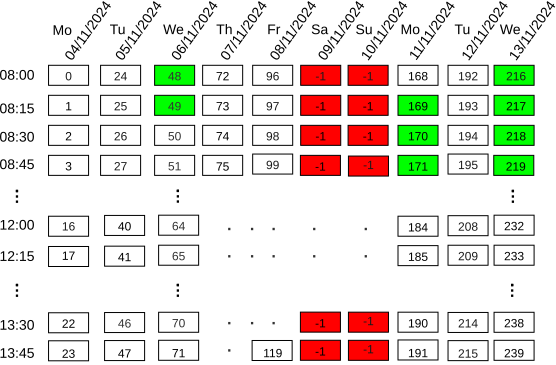

This work is licensed under a Creative Commons Attribution 4.0 International License.
This work is licensed under a Creative Commons Attribution 4.0 International License. Proposed by George Assaf, Petra Hofstedt, Sven Löffler
The goal of the Medical Appointment Sequence Scheduling Problem (MASSP) is to determine a schedule for a series of medical appointments, where each appointment corresponds to a treatment stage within a patient’s overall treatment plan. To schedule an appointment in the sequence, a set of medical resources such as specialists, medical equipment, and other necessary facilities must be selected from those available in the medical center. A resource is considered available if its calendar contains sufficient consecutive time slots that are unoccupied.
In addition, the following constraints, which are determined by medical needs, must also be satisfied when applicable:
The following figure illustrates an example of a resource calendar represented as a 2D matrix. The columns correspond to scheduling days (from Monday, 04/11/2024, to Wednesday, 13/11/2024), while the rows denote time slots ranging from 08:00 to 14:00, each of 15-minute duration. The cells represent slot identifiers. Negative slots (highlighted in red) indicate times that are already occupied and therefore unavailable for scheduling. Green slots indicate availability where the resource is assigned to a sequence of three appointments:

This encoding style facilitates extracting date and time information from the calendars. For more details, see our published paper: https://link.springer.com/chapter/10.1007/978-3-031-95973-8_1.
Let the tuple $\mathcal{S} = (A_1, \dots, A_l)$ represent a sequence of $l$ medical appointments.
Each appointment $\mathcal{A}i = \langle R_i, T_i \rangle$, $i \in {1, \dots, l}$, is defined as follows.
1. (R_i = {x, \dots, x_{i,l}}) denotes the set of resources required by the (i)-th individual appointment.
2. (T_i = {t_{i,1}, \dots, t_{i,m}}) denotes the set of time slot identifiers required to cover the (i)-th individual appointment, where (m) is the appointment length in slots. For example, if the appointment duration is 60 minutes and the length of each time slot is 15 minutes, then the appointment length $m = \frac{60}{15} = 4$ (slots).
In the following, we describe the problem constraints.
The constraint given in Example 1 is encoded using this constraint.
Type consistency / continuity (when required). If continuity of care is required for a given resource type across appointments (A_i) and (A_j), then the same individual must be used: $$ \forall i \neq j,\; \forall k,h:\; \big(\mathrm{Type}(x_{i,k}) = \mathrm{Type}(x_{j,h}) \big)\;\Rightarrow\; x_{i,k} = x_{j,h}, $$ which means that the resources that are encoded by the variables $x_{i,k}$ and $x_{j,h}$ must be the same for appointment $A_i$ and appointment $A_j$. For example, constraint given in Example 5 is encoded using this constraint.
Sequential time slots within an appointment (no gaps).
$$
t_{i,j} = t_{i,j-1} + 1,
\quad \forall i,\; \forall j \in {2, \ldots, m}.
$$
No overlap of appointment starts.
$$
\text{AllDifferent}(t_{1,1}, t_{2,1}, \ldots, t_{l,1}).
$$
Minimum distance between appointments.
Let (d_j) be the duration in slots of appointment (A_j), and let $\Delta_{i,j}$ be the minimum required gap (in slots) from the end of (A_j) to the start of (A_i). Then
$$
t_{i,1} \;\ge\; t_{j,1} + d_j + \Delta_{i,j}
\quad \forall i \neq j.
$$
As an example, the constraint given in Example 3 (lower bound) is encoded using this constraint.
As an example, the constraint given in Example 4 (upper bound) is encoded using this constraint.
Example. To exclude the date 05/11/2024 with column index (1), we impose $$ \left\lfloor \frac{t_{1,1}}{N} \right\rfloor \neq 1. $$
The optimization objective is to assign medical resources to appointments in a way that minimizes the maximum workload across all resources, promoting balanced utilization. Let $w_r$ denote the initial workload of resource $r$, and let $d_a$ be the duration of appointment $a$. The binary indicator (\mathbb{1}{x = r}) equals 1 if resource $r$ is assigned to the $i$-th resource requirement of appointment $a$. The final workload $W_r$ for resource $r$ is calculated as:
$$ W_{r} = w_{r} + \sum_{a=1}^{l} \sum_{i=1}^{|R_a|} x_{a,i}=r \cdot d_a \quad \forall r \in R. $$
The objective is then to minimize:
$$ \min \left( \max_{r \in R} W_r \right) $$
This formulation ensures that appointments are assigned to the least-loaded available resources, preventing resource overutilization while maintaining schedule feasibility.
Example: Given cardiologists with workloads {4, 8, 13} hours and neurologists with workloads {12, 4, 66} hours, an appointment requiring one cardiologist and one neurologist with duration 5 hours would be assigned to the cardiologist with 4 hours and the neurologist with 4 hours, resulting in balanced workloads of 9 hours each rather than overloading already heavily utilized resources.
This work is licensed under a Creative Commons Attribution 4.0 International License.